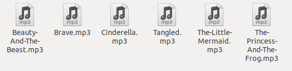
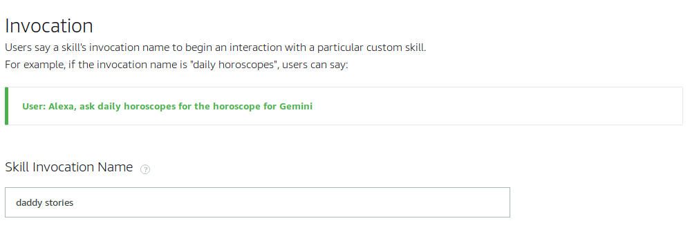
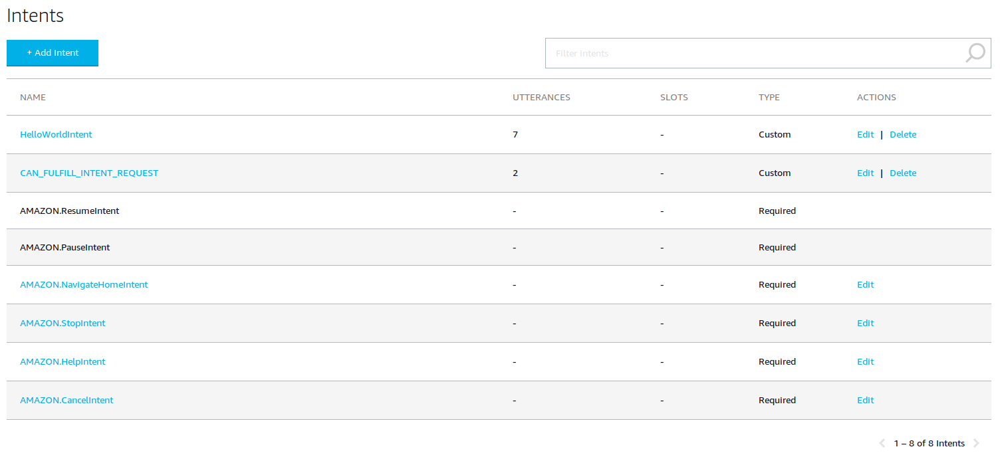
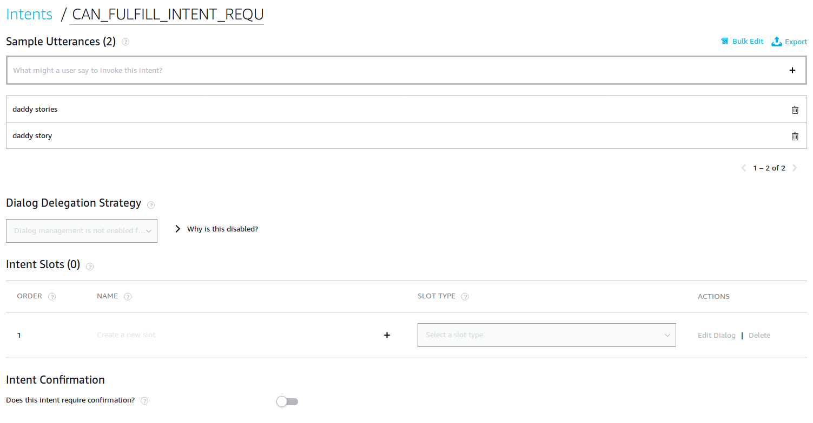
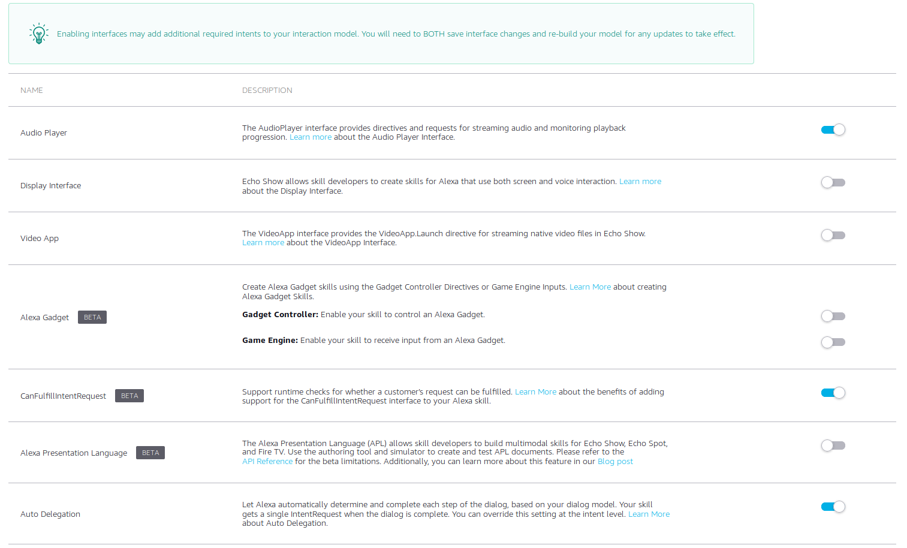
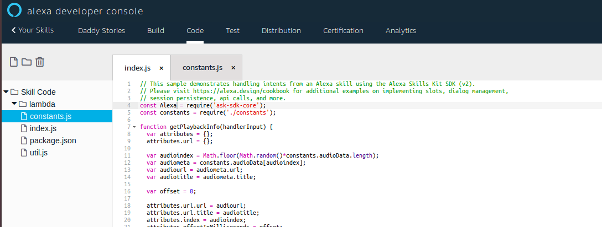

Alexa, daddy stories
Work (the kind I get paid for) carried me far and away from my family for 5 weeks recently. It was supposed to be maximum 3, but that’s another story. I was especially missing my wife and 3 year old baby girl during this time. The time zone difference (2 hours) was not that much, but had an impact when I had to work late. Sometimes I would miss bedtime and reading my baby girl stories to go to sleep, but more importantly, she would miss me.
Since I smart-homerized the house, there’s usually a mobile echo dot (or using the alexa app on the phone can do in a pinch) that can be temporarily placed in my baby girl’s room. I hatched upon a plan. I ordered 6 little golden princess books from Amazon, delivered to my remote address, recorded them and created a skill that would play back a story at random when asked for “Daddy Stories”. It worked like a charm and helped my baby girl sleep more soundly than ever.
Step one was getting the recordings and converting them to an MP3 format that the echo dot (or alexa) could play. Using ffmpeg to convert after recording did the trick.
ffmpeg -y -i <input.wav> -ar 16000 -ab 48k -codec:a libmp3lame -ac 1 <output.mp3>
Then I placed the MP3s in an Internet accessible location on a https webserver. I could have used Amazon’s S3 for this, but since this is only for me (technically for my baby girl) and I have a small server running at home so… Why not use it?

Next I created a skill with an invocation name (and skill name) of “Daddy Stories”.

Then, I added some intents. The hello world intent is not necessary, I just left it there in case I wanted to test something. Judge not. I configured an intent for the can fulfill intent request, but I’m not sure it’s working…

I still put some sample utterances for the can fulfill intent request though. This is what should allow my baby girl to say “Alexa, daddy stories” instead of “Alexa, open daddy stories”.

The key to getting this to work is to make sure I had the AudioPlayer interface enabled. That’s what got me the ability to stream those recorded MP3s and control how they are streamed.

One thing I have to credit Amazon with is that they provide code samples on how to do lots of stuff. Playing multiple audio streams is no exception and from their github repository I found a node.js sample of just that. I didn’t need to follow their deployment instructions, just had a look at the lambda/src directory and the two files constants.js and index.js. Rather than setting up a seperate lambda ARN and execution profile, it turns out Amazon provides a code tab now, letting you edit code easily.

I modified the structure (and obviously the contents of the constants.js file) to contain information on the story and the URL of the MP3.
exports.audioData = [
{
title: 'Beauty And The Beast',
url: 'https://this.server.name.is.private/daddystories/audio/Beauty-And-The-Beast.mp3',
},
{
title: 'Brave',
url: 'https://this.server.name.is.private/daddystories/audio/Brave.mp3',
},
{
title: 'Cinderella',
url: 'https://this.server.name.is.private/daddystories/audio/Cinderella.mp3',
},
{
title: 'Tangled',
url: 'https://this.server.name.is.private/daddystories/audio/Tangled.mp3',
},
{
title: 'The Little Mermaid',
url: 'https://this.server.name.is.private/daddystories/audio/The-Little-Mermaid.mp3',
},
{
title: 'The Princess And The Frog',
url: 'https://this.server.name.is.private/daddystories/audio/The-Princess-And-The-Frog.mp3',
},
];
I also modified the index.js file to grab a random entry (instead of playing in order) and play that. I left in the code to play next and previous, but I’m not tracking state or last played as I wanted something simple and quick.
// This sample demonstrates handling intents from an Alexa skill using the Alexa Skills Kit SDK (v2).
// Please visit https://alexa.design/cookbook for additional examples on implementing slots, dialog management,
// session persistence, api calls, and more.
const Alexa = require('ask-sdk-core');
const constants = require('./constants');
function getPlaybackInfo(handlerInput) {
var attributes = {};
attributes.url = {};
var audioindex = Math.floor(Math.random()*constants.audioData.length);
var audiometa = constants.audioData[audioindex];
var audiourl = audiometa.url;
var audiotitle = audiometa.title;
var offset = 0;
attributes.url.url = audiourl;
attributes.url.title = audiotitle;
attributes.index = audioindex;
attributes.offsetInMilliseconds = offset;
return attributes;
}
const controller = {
async play(handlerInput) {
const {
attributesManager,
responseBuilder
} = handlerInput;
const playbackInfo = getPlaybackInfo(handlerInput);
const {
url,
offsetInMilliseconds,
index
} = playbackInfo;
const playBehavior = 'REPLACE_ALL';
const podcast = url;
const token = url.url;
playbackInfo.nextStreamEnqueued = false;
responseBuilder
.speak(`Here is daddy reading ${podcast.title}`)
.withShouldEndSession(true)
.addAudioPlayerPlayDirective(playBehavior, podcast.url, token, offsetInMilliseconds, null);
return responseBuilder.getResponse();
},
stop(handlerInput) {
return handlerInput.responseBuilder
.addAudioPlayerStopDirective()
.getResponse();
},
async playNext(handlerInput) {
const {
playbackInfo,
playbackSetting,
} = await handlerInput.attributesManager.getPersistentAttributes();
const nextIndex = (playbackInfo.index + 1) % constants.audioData.length;
if (nextIndex === 0 && !playbackSetting.loop) {
return handlerInput.responseBuilder
.speak('You have reached the end of the playlist')
.addAudioPlayerStopDirective()
.getResponse();
}
playbackInfo.index = nextIndex;
playbackInfo.offsetInMilliseconds = 0;
playbackInfo.playbackIndexChanged = true;
return this.play(handlerInput);
},
async playPrevious(handlerInput) {
const {
playbackInfo,
playbackSetting,
} = await handlerInput.attributesManager.getPersistentAttributes();
let previousIndex = playbackInfo.index - 1;
if (previousIndex === -1) {
if (playbackSetting.loop) {
previousIndex += constants.audioData.length;
} else {
return handlerInput.responseBuilder
.speak('You have reached the start of the playlist')
.addAudioPlayerStopDirective()
.getResponse();
}
}
playbackInfo.index = previousIndex;
playbackInfo.offsetInMilliseconds = 0;
playbackInfo.playbackIndexChanged = true;
return this.play(handlerInput);
},
};
const LaunchRequestHandler = {
canHandle(handlerInput) {
return handlerInput.requestEnvelope.request.type === 'LaunchRequest';
},
handle(handlerInput) {
return controller.play(handlerInput);
/*
const speechText = 'Welcome, you can say Hello or Help. Which would you like to try?';
return handlerInput.responseBuilder
.speak(speechText)
.reprompt(speechText)
.getResponse();
*/
}
};
const HelloWorldIntentHandler = {
canHandle(handlerInput) {
return handlerInput.requestEnvelope.request.type === 'IntentRequest'
&& handlerInput.requestEnvelope.request.intent.name === 'HelloWorldIntent';
},
handle(handlerInput) {
const speechText = 'Hello World!';
return handlerInput.responseBuilder
.speak(speechText)
//.reprompt('add a reprompt if you want to keep the session open for the user to respond')
.getResponse();
}
};
const HelpIntentHandler = {
canHandle(handlerInput) {
return handlerInput.requestEnvelope.request.type === 'IntentRequest'
&& handlerInput.requestEnvelope.request.intent.name === 'AMAZON.HelpIntent';
},
handle(handlerInput) {
const speechText = 'You can say hello to me! How can I help?';
return handlerInput.responseBuilder
.speak(speechText)
.reprompt(speechText)
.getResponse();
}
};
const CancelAndStopIntentHandler = {
canHandle(handlerInput) {
return handlerInput.requestEnvelope.request.type === 'IntentRequest'
&& (handlerInput.requestEnvelope.request.intent.name === 'AMAZON.CancelIntent'
|| handlerInput.requestEnvelope.request.intent.name === 'AMAZON.StopIntent');
},
handle(handlerInput) {
const speechText = 'Goodbye!';
return handlerInput.responseBuilder
.speak(speechText)
.getResponse();
}
};
const SessionEndedRequestHandler = {
canHandle(handlerInput) {
return handlerInput.requestEnvelope.request.type === 'SessionEndedRequest';
},
handle(handlerInput) {
// Any cleanup logic goes here.
return handlerInput.responseBuilder.getResponse();
}
};
const CanFulfillIntentRequestIntentHandler = {
canHandle(handlerInput) {
return handlerInput.requestEnvelope.request.type === 'IntentRequest'
&& (handlerInput.requestEnvelope.request.intent.name === 'CAN_FULFILL_INTENT_REQUEST');
},
handle(handlerInput) {
return controller.play(handlerInput);
}
};
const AmazonPauseIntentHandler = {
canHandle(handlerInput) {
return handlerInput.requestEnvelope.request.type === 'IntentRequest'
&& (handlerInput.requestEnvelope.request.intent.name === 'AMAZON.PauseIntent');
},
handle(handlerInput) {
return controller.stop(handlerInput);
}
};
// The intent reflector is used for interaction model testing and debugging.
// It will simply repeat the intent the user said. You can create custom handlers
// for your intents by defining them above, then also adding them to the request
// handler chain below.
const IntentReflectorHandler = {
canHandle(handlerInput) {
return handlerInput.requestEnvelope.request.type === 'IntentRequest';
},
handle(handlerInput) {
const intentName = handlerInput.requestEnvelope.request.intent.name;
const speechText = `You just triggered ${intentName}`;
return handlerInput.responseBuilder
.speak(speechText)
//.reprompt('add a reprompt if you want to keep the session open for the user to respond')
.getResponse();
}
};
// Generic error handling to capture any syntax or routing errors. If you receive an error
// stating the request handler chain is not found, you have not implemented a handler for
// the intent being invoked or included it in the skill builder below.
const ErrorHandler = {
canHandle() {
return true;
},
handle(handlerInput, error) {
console.log(`~~~~ Error handled: ${error.message}`);
const speechText = `Sorry, I couldn't understand what you said. Please try again.`;
return handlerInput.responseBuilder
.speak(speechText)
.reprompt(speechText)
.getResponse();
}
};
// This handler acts as the entry point for your skill, routing all request and response
// payloads to the handlers above. Make sure any new handlers or interceptors you've
// defined are included below. The order matters - they're processed top to bottom.
exports.handler = Alexa.SkillBuilders.custom()
.addRequestHandlers(
LaunchRequestHandler,
HelloWorldIntentHandler,
HelpIntentHandler,
CancelAndStopIntentHandler,
CanFulfillIntentRequestIntentHandler,
AmazonPauseIntentHandler,
SessionEndedRequestHandler,
IntentReflectorHandler) // make sure IntentReflectorHandler is last so it doesn't override your custom intent handlers
.addErrorHandlers(
ErrorHandler)
.lambda();
At the end of the day, the recordings, the Alexa skill and one of the mobile echo dots helped my daughter feel closer to me although I was far far away. We still use the skill after we’ve read books and are tired, but the little one somehow has the energy of a thousand suns in her and refuses to go to sleep. She loves her daddy stories and my wife and I, it goes without saying, love her.